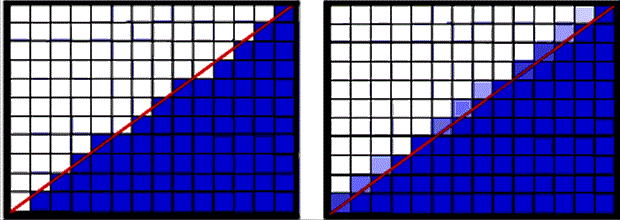
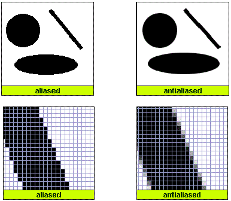

Aliasing is the phenomenon that occurs when high frequency signals are sampled at a lower rate creating a visual distortion in the image. Typically the image will tend to have jagged edges as opposed to smoother ones. This is due to the discrete nature of the image raster which has a finite frequency range thus creating a bound on the set of represented signals from those that are continuous from the entity being sampled. This effect is much more noticeable in animations than in still images.
 Antialiasing techniques tend to fall under one of two categories: supersampling and "filtering".
The practice of supersampling uses the idea of a filter, the basic idea is that an image is sampled at an exponentially high output resolution and translated through low-pass filters, used to keep the signals within the signal bound. Though supersampling is a common practice, it only produces images with noise less irritating than the original aliased image; this is because the filter is applied after the image has been sampled.
The other technique, which is generically dubbed "filtering", applied this filter prior to the sample and takes the signal from the continuous space. Though this approach tends to be more costly, the results are often much more favorable as the technique works in the subpixel dimension via exact area sampling.
In many cases, the latter technique has proven to be superior. One approach explored in texturing terrain uses a model of ray casting hit points on a voxelized terrain model, where 1-dimensional values can be interpreted as 3D information.

In combatting aliasing, there are typically two kinds of artifacts that are prevalent in the anti aliasing process: temporal aliasing and spatial aliasing. These artifacts arise during the ray casting process due to its inherent point-sampling characteristics. This is best remedied by implementing the most effective algorithm for "exact" anti aliasing. These implementations include:
To be expanded...
Super-sampling combats aliasing by taking multiple color samples at several instances inside the pixel, and an average color value is calculated. By doing so one can more precisely represent a detailed image. So the first essential element of super-sampling is that extra samples are used to increase the density of image information. One can see this as taking sub-samples at the pixel level. Therefore, instead of one single central sample per-pixel, super-sampling techniques utilize several samples per pixel.
Ordered Grid Super-Sampling is the most common type of super-sampling anti-aliasing. The name itself is descriptive of the sub-sample positions within a given pixel. The extra samples are positioned in an ordered grid shape. The sub-samples are aligned horizontally and vertically, creating a matrix of points. These sub-samples are located inside the original pixel in a regular pattern.
Another specialized implementation of supersampling is the practice of Multisample anti-aliasing (MSAA), also commonly known as Multisampling. Multisampling refers to a specific optimization of supersampling where the rendering machine compute the image according to a per pixel basis where only the z-values, or depth, and stencil values are supersampled. An even broader definition of the term Multisampling is one which refers to a specific situation where only a limited or selected number of components in the final rendered image are supersampled. So basically, Multi-sampling only utilizes the initial sample for all sub-samples and it even has its own set of different mixtures and flavors. In comparison to supersampling, the results of Mulitsampling can provide an image that can fall anywhere on the spectrum of equivalent quality with improved performance or higher quality with equivalent performance. Different Multisampling qualities include 2x, 4x, 8x, and even 16x MSAA where one can assume that with an increase in quality yields slower performance.
Two common practices of Multisampling include point sampling and area sampling. Point sampling only applies to those discrete points that fall within the mechanism's rendering primitive. Though the geometry of the rendered area will remain correct, making the primitive resident points the only points to be exclusively Multisampled will result in lower quality filtering because not all points within the image fragment are being sampled. On the other side of that same coin, area sampling will take into account the entire area of that image fragment and utilize an amount of Multisampled points proportionate the area of said fragment. This remedies the lower quality filtering that occurs in point sampling, but will result in aliasing artifacts since it samples points outside the rendering primitive.
So, how are these points being sampled? Well again, there is a few different approaches that are commonly used in regards to Multisampling. In a regular grid sampling pattern, locations are evenly spaced throughout the pixel. Though it is easy to implement, the number of evenly spaced sampling locations yield an expensive cost to performance. To mitigate this performance cost, sparse regular grid patterns were created such that a subset of points are chosen from the regular grid. This smaller set of sampled points yields a much less computationally expensive implementation. Similar to the sparse regular grid is a stochastic sampling pattern where the sampling locations are randomly distributed throughout the pixel. Though this also has an improved performance cost due to the smaller set of sampling locations, being that the nature of this practice is randomly determined, evaluation of certain elements within the pixel can become unclear when compared to those methods that utilize a regular grid.
A common issue that arises when discussing the benefits between Multisampling and Supersampling is the issue of alpha testing and how transparent components are handled when rendering the image. Alpha testing is the process in which certain translucent pixels that do not meet a certain criteria or fall within a specified boundary are rejected and not rendered to the image. Basically, if the alpha value of the pixel fragment does not fall within a rendering range than it is ignored and more or less presented as invisible to the user. Though this does not cause the image quality to suffer or become worse it just yields the same result as if the anti-aliasing was not applied. A solution to this issue is a practice known as alpha blending where there is a smooth transition between visible and transparent pixel fragments in the rendered image. The only stipulation of alpha blending is that it must be applied back-to-front, and typically images are rendered front-to-back, simply because the elements that appear to be in the back of the image must be visible through the ones in the front. Thus, alpha blending, when paired with Multisampling is a superior technique in rendering image quality, but yields a greater cost performance.
Blur filters: First detects contrasts (edges) and blurs along the gradiant. Cheapest form of AA, commonly used in console versions of games.
Pro’s : Cheapest, greatly reduces jagged edges that cover alpha textures, also covers alpha textures
Con’s: Blurs everything including textures